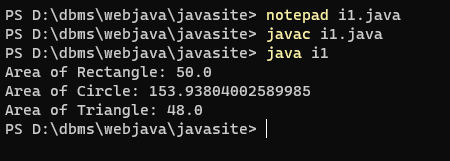
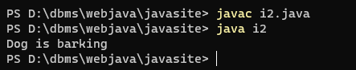
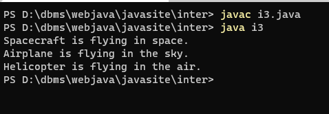
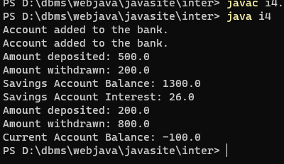
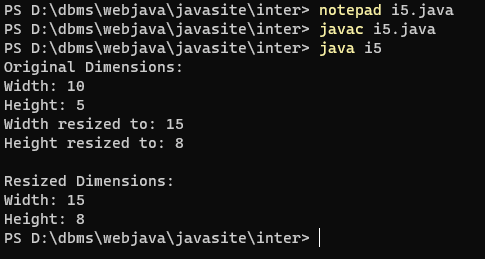
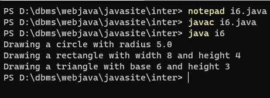
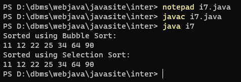
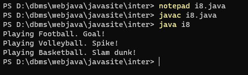
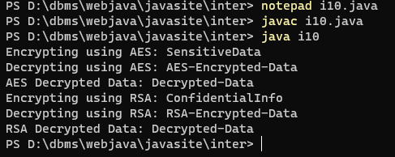

prog 1. Write a Java program to create an interface Shape with the getArea() method. Create three classes Rectangle, Circle, and Triangle that implement the Shape interface. Implement the getArea() method for each of the three classes.
output

prog 2. Write a Java program to create a Animal interface with a method called bark() that takes no arguments and returns void. Create a Dog class that implements Animal and overrides speak() to print "Dog is barking".
output

prog 3. Write a Java program to create an interface Flyable with a method called fly_obj(). Create three classes Spacecraft, Airplane, and Helicopter that implement the Flyable interface. Implement the fly_obj() method for each of the three classes.
output

prog 4. Write a Java programming to create a banking system with three classes - Bank, Account, SavingsAccount, and CurrentAccount. The bank should have a list of accounts and methods for adding them. Accounts should be an interface with methods to deposit, withdraw, calculate interest, and view balances. SavingsAccount and CurrentAccount should implement the Account interface and have their own unique methods.
output

prog 5. Write a Java program to create an interface Resizable with methods resizeWidth(int width) and resizeHeight(int height) that allow an object to be resized. Create a class Rectangle that implements the Resizable interface and implements the resize methods.
output

prog 6. Write a Java program to create an interface Drawable with a method draw() that takes no arguments and returns void. Create three classes Circle, Rectangle, and Triangle that implement the Drawable interface and override the draw() method to draw their respective shapes.
output

prog 7. Write a Java program to create an interface Sortable with a method sort() that sorts an array of integers in ascending order. Create two classes BubbleSort and SelectionSort that implement the Sortable interface and provide their own implementations of the sort() method.
output

prog 8. Write a Java program to create an interface Playable with a method play() that takes no arguments and returns void. Create three classes Football, Volleyball, and Basketball that implement the Playable interface and override the play() method to play the respective sports.
output

prog 9. Write a Java program to create an interface Searchable with a method search(String keyword) that searches for a given keyword in a text document. Create two classes Document and WebPage that implement the Searchable interface and provide their own implementations of the search() method.
output
prog 10. Write a Java program to create an interface Encryptable with methods encrypt (String data) and decrypt (String encryptedData) that define encryption and decryption operations. Create two classes AES and RSA that implement the Encryptable interface and provide their own encryption and decryption algorithms.
output

prog 11. Write a Java program to create an interface Sortable with a method sort (int[] array) that sorts an array of integers in descending order. Create two classes QuickSort and MergeSort that implement the Sortable interface and provide their own implementations of the sort() method.